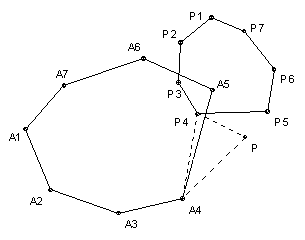

Given a convex n-gon A1A2 ... An with area A and a point P, we rotate P through an angle x about Ai to get the point Pi. Find the area of the polygon P1P2 ... Pn.
Solution

Consider the triangle PAiPi. The angle AiPPi is 90o - x/2, which is independent of i, and the ratio PPi/PAi = 2 sin x/2, which is also independent of i. So we can obtain Pi by rotating Ai through an angle 90o - x/2 about P and then expanding by a factor 2. Thus the area of the polygon P1P2 ... Pn is 4 sin2(x/2) times the area of the polygon A1A2 ... An.

© John Scholes
jscholes@kalva.demon.co.uk
18 Dec 2002
Last corrected/updated 28 Dec 02